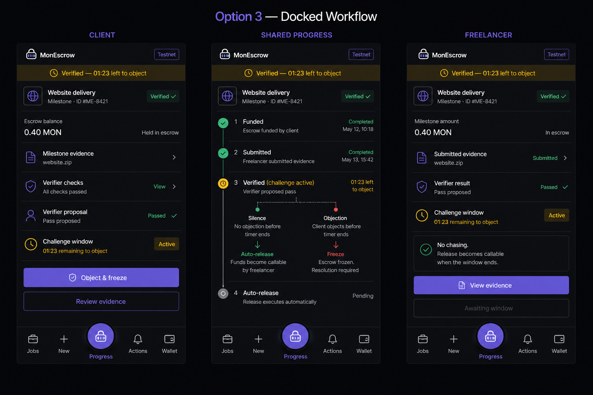

Direct payment moves the delivery risk to the client.
Programmable milestone escrow
A deadline instead of a chase.
The client keeps a veto. The freelancer gets a clock. Software never gets the final word.
Funded up front
Released by milestone

The problem already exists
Both sides are asked to trust first.
Work-first moves the payment risk to the freelancer.
Generic escrow locks the money—but can still wait forever for a click.
The mechanism
Fast enough to pay. Slow enough to stop.
Traditional escrow
A human click is the finish line.
Work finishes
Wait for clientThe inbox becomes the bottleneck
Payment
Naive AI escrow
The bot becomes the final judge.
Bot checks
Instant paymentA wrong verdict is already irreversible
MonEscrow
The verifier proposes. People retain control.
Pass proposed
Challenge windowClient can object before the deadline
Silence → release
Objection → freeze
One escrow. Three synchronized views.
Challenge window · 01:23Client can object & freeze
Shared state explains what happens next
Freelancer sees a deadline—not a promise
The full job is funded first
Every step has one actor and one consequence.
Agree
AI turns the brief into measurable milestones. Both parties approve.
Fund
The client locks the full job budget in the escrow contract.
Submit
The freelancer attaches exact evidence to one milestone.
Propose
Deterministic checks plus bounded review propose a pass.
Settle
Silence enables release. Objection freezes for the arbiter.
Silence → anyone can trigger releaseReleased value is credited to the freelancer’s owed balance.
Objection → milestone freezesThe named arbiter resolves; the verifier cannot.
Trust is visible and bounded
No software gets unilateral control.
The contract holds value. Every other actor receives the minimum authority needed.
VerifierCan propose a pass. Cannot release funds or settle disputes.
ClientCan object during the window. Cannot decide the dispute alone.
ArbiterActs only after a milestone is frozen.
Escrow contractHolds funds and enforces role, state, amount, and time.
Built on Monad testnet
Silence pays.
Objection pauses.
A programmable deadline for freelance work—without becoming another marketplace.
Fund · Submit · Challenge · Settle · Withdraw
00:00
← → step · N notes · F fullscreen · R restart
1 / 7